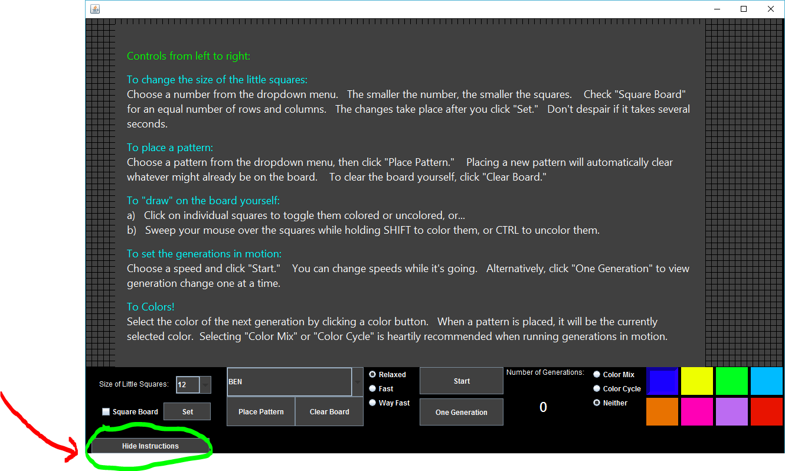
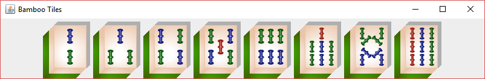
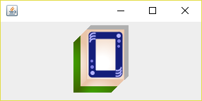

MixedUp was the final project in my Summer Android App Development course at Weber State University, with Professor Rob Hilton.
MixedUp is more than just a school project. I use this app myself! In fact, I wanted it a few years ago, so I had to make it.
It pairs well with the MyFitnessPal app.
MixedUp fetches JSON data from the REST API provided by Nutritionix.com. Food lists, meal lists, and nutritional data is stored in the app's SQLite database.
I am excited that it is available for download in the Google Play Store. So far it has been installed by over 80 users worldwide.
My next update will make it available in different languages.
This is the work of a novice programmer (me), written during my second semester of Object Oriented Programming at Salt Lake Community College.
You've never seen so many JPanels and JButtons all in once place! Well, maybe you have...
It even comes with instructions, visible when you click the button in its lower left corner:
This game was written for the course Object Oriented User Interface Development with Java, at Weber State University.
Almost everything was "handdrawn" using the Java 2D API (java.awt.Graphics2D object).
The blank tile templates and the "bamboo sticks" were drawn and placed with code.
The "White Dragon" was also drawn with code.
But wait, there's more! There's calculus 2! (my idea—I'm very proud of it)
These circles are patterned with polar "rose" graphs translated into Java.
Math is beautiful!
private void draw_innerCircle(Graphics2D g2, Point center, int diameter, float stroke_width, Color color_light, Color color_dark){
int amp = (int)(5*diameter)/13;
double deltaTheta = Math.PI / 180 ;
int w = center.x;
int h = center.y;
path1.reset();
path1.moveTo(w+amp, h );
for (double theta = 0; theta < Math.PI; theta += deltaTheta) { // the polar graph called a "rose"...yay Calc 2!
double x = amp * Math.cos(3 * theta) * Math.cos(theta) + w;
double y = amp * Math.cos(3 * theta) * Math.sin(theta) + h;
path1.lineTo(x, y);
}
path2.reset();
path2.moveTo(w-amp, h );
for (double theta = 0; theta < Math.PI; theta += deltaTheta) {
double x = amp * Math.cos(3 * theta - Math.PI) * Math.cos(theta) + w;
double y = amp * Math.cos(3 * theta - Math.PI) * Math.sin(theta) + h;
path2.lineTo(x, y);
}
BasicStroke outlineStroke = new BasicStroke(stroke_width);
g2.setStroke(outlineStroke);
g2.setColor(color_dark);
g2.fillOval(w-(diameter/2), h-(diameter/2), diameter, diameter);
g2.setColor(color_light);
g2.draw(path1);
g2.draw(path2);
Graphics2D g2copy = (Graphics2D)g2.create();
Graphics2D g2copy1 = (Graphics2D)g2.create();
g2copy.translate(w-(.78*3*amp/2),h-(.78*3*amp/2));
g2copy.scale(.78, .78);
g2copy.drawOval(0, 0, 3 * amp, 3 * amp);
g2.setColor(color_dark);
g2.fillOval(w-(9*amp)/20, h-(9*amp)/20, (9*amp)/10, (9*amp)/10);
g2copy1.setColor(color_light);
g2copy1.translate(w-(.65*((9*amp)/20)),h-(.65*((9*amp)/20)));
g2copy1.scale(.65, .65);
g2copy1.drawOval(0, 0, (9*amp)/10, (9*amp)/10);
g2.dispose();
}
public void draw_outerCircle(Graphics2D g2) {
int amp = 18;
double deltaTheta = Math.PI / 180 / 100 ;
int w = 45; //center
int h = 36+SHADOW_SIZE;
path3.reset();
path3.moveTo(w+amp, h );
for (double theta = 0; theta < Math.PI; theta += deltaTheta) {
double x = amp * Math.cos(7 * theta) * Math.cos(theta) + w;
double y = amp * Math.cos(7 * theta) * Math.sin(theta) + h;
path3.lineTo(x, y);
}
path4.reset();
path4.moveTo(w-amp, h );
for (double theta = 0; theta < Math.PI; theta += deltaTheta) {
double x = amp * Math.cos(7 * theta - Math.PI) * Math.cos(theta) + w;
double y = amp * Math.cos(7 * theta - Math.PI) * Math.sin(theta) + h;
path4.lineTo(x, y);
}
BasicStroke outlineStroke = new BasicStroke(1.5f);
g2.setStroke(outlineStroke);
g2.setColor(DARK_GREEN);
g2.fillOval(w-25,h-25, 50, 50);
g2.setColor(LIGHT_GREEN);
g2.draw(path3);
g2.draw(path4);
outlineStroke = new BasicStroke(3f);
g2.setStroke(outlineStroke);
g2.translate(w-.9*25, h-.9*25);
g2.scale(.9, .9);
g2.drawOval(0, 0, 50, 50);
g2.dispose();
}
This game was written for the course Software Engineering II, at Weber State University.
Card layering and messy misalignment (rotations) done with Java Swing and AWT 2D Graphics.
Slapjack, 2016 Presidential Election Edition, is a two-player game complete with shuffling and slapping sounds!
You can set your own hotkeys to turn your top card over and slap the center pile when you see either Hillary or the Donald!
ZAAMG is a single-page web app written as the final project for my Software Engineering II course at Weber State University, with professor Spencer Hilton.
It consists of PHP, Javascript, and a MySQL database, and makes heavy use of AJAX.
ZAAMG is a tool to assist WSU faculty in arranging a schedule of courses, professors, and classrooms for upcoming semesters. It gives a visual overview of the days, times, professors, and locations that have been assigned to course sections, so that conflicts may easily be discovered and averted. It also generates an Excel spreadsheet report of a finalized schedule, to be given to the department secretary.
ZAAMG provides an easy-to-use interface for creating database records of the various "resources" which comprise a course Section. A Section has a Course, a Professor, and a Classroom. Before creating Section records, the user must first create database records of:
Forms for Creating, Editing, and Deleting these records appear as Bootstrap modals.
Sections, Professors, and Classrooms may also be edited inline.
The best part is the highly-customized calendar views, adapted from FullCalendar.io.
Inline calendar views for individual profs and rooms:
Overview of Sections for all Professors and Classrooms in a Building (Scrollable)
Clicking the button above will open a webpage with the description and database coding guts of the final project for the course
Advanced Database Programming, at Weber State University.
The descriptive website makes use of nested Bootstrap accordions, which always fascinates me a little.
I created a fictitious business (a musician-ensemble booking agency) for which I designed a database in MySQL, which loosely tied in to another database in SQL Server for another fictitious business (resort management).
My business description, rules, ERD, and all scripts are available for peeking.
For example:
DROP TRIGGER IF EXISTS tr_isLodgingRequired;
DELIMITER //
CREATE TRIGGER tr_IsLodgingRequired
BEFORE UPDATE ON Contract FOR EACH ROW
BEGIN
IF NEW.ContractStatus = 'B'
THEN
IF isLodgingRequired(NEW.ContractID)= 1
AND OLD.Lodging != 'Reserved'
AND OLD.Lodging != 'Required'
THEN
SET NEW.Lodging = 'Required';
END IF;
END IF;
END //
It's true, I produced this Simple Guide for my Technical Writing course at Salt Lake Community College.
But it's more true that I wrote it for myself.
It used to be that whenever I tried to open a wine bottle, I got confused. I decided it was time to nail this operation down once and for all.
I love this fun little guide, and I hope it will do some good in the world!